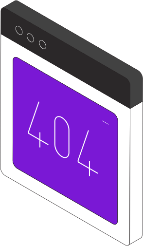

@@include("html/chunk/svg-sprite.html") @@include("html/chunk/header.html")
Page not found
It may have been deleted or moved.
Use the menu or go back to the main page.
Home

@@include("html/chunk/footer.html")